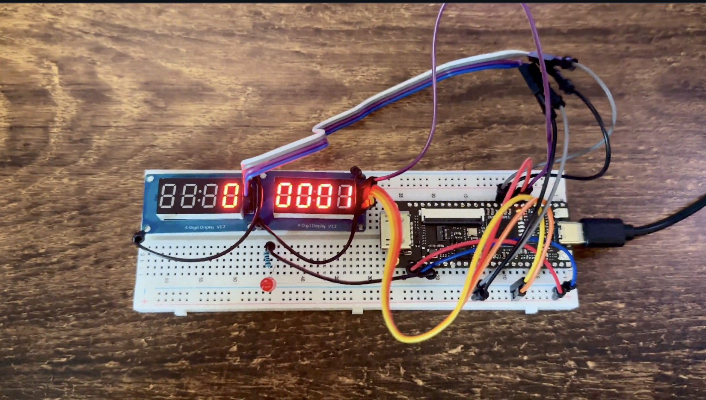
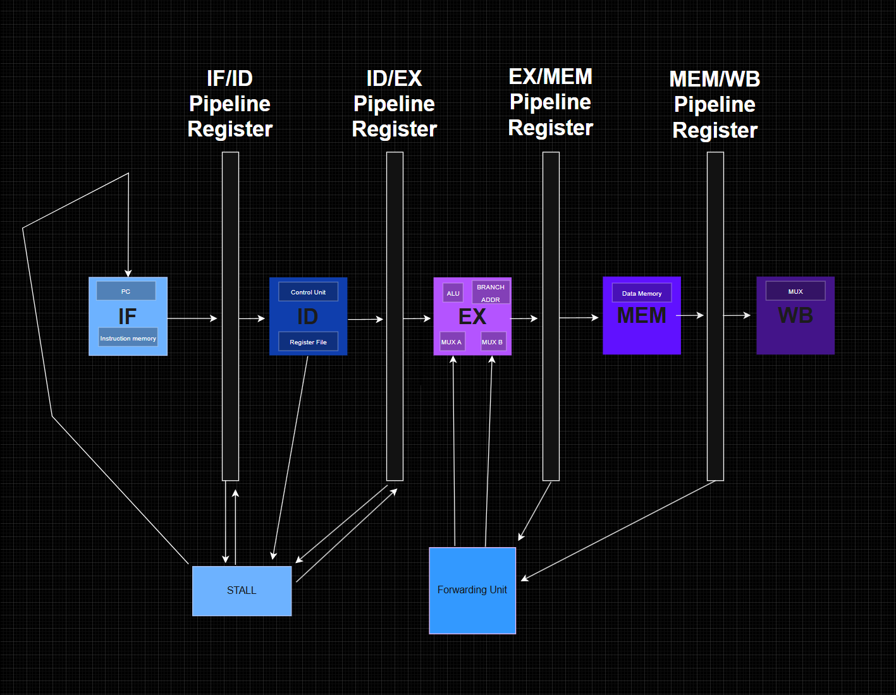
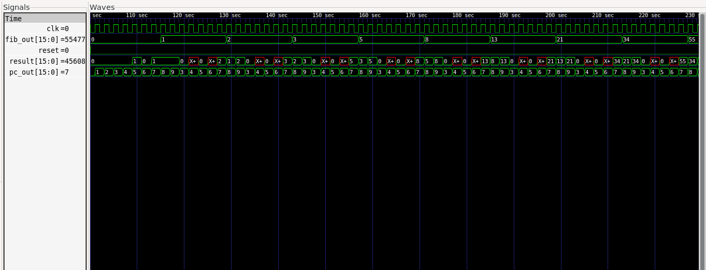
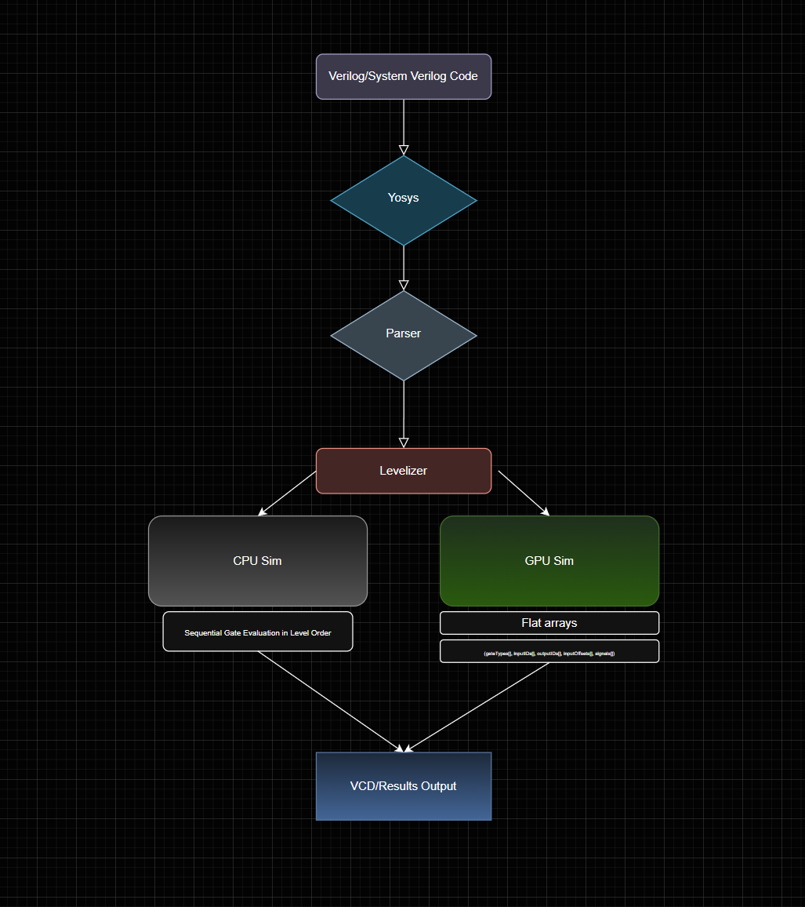
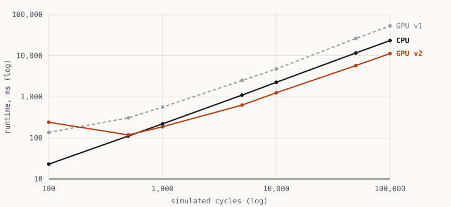
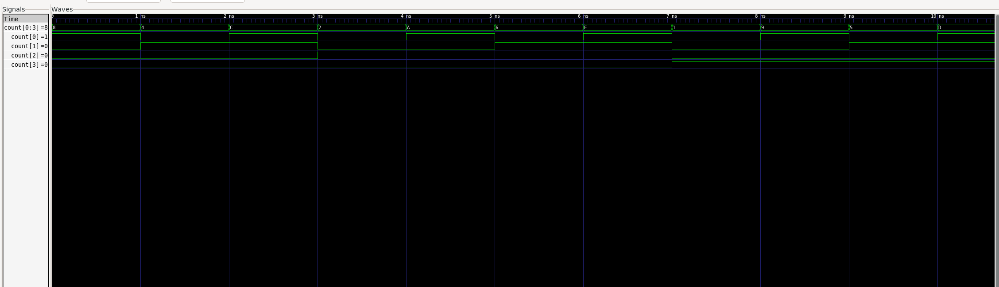
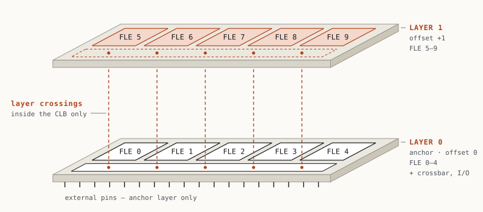
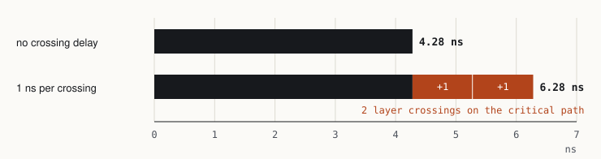
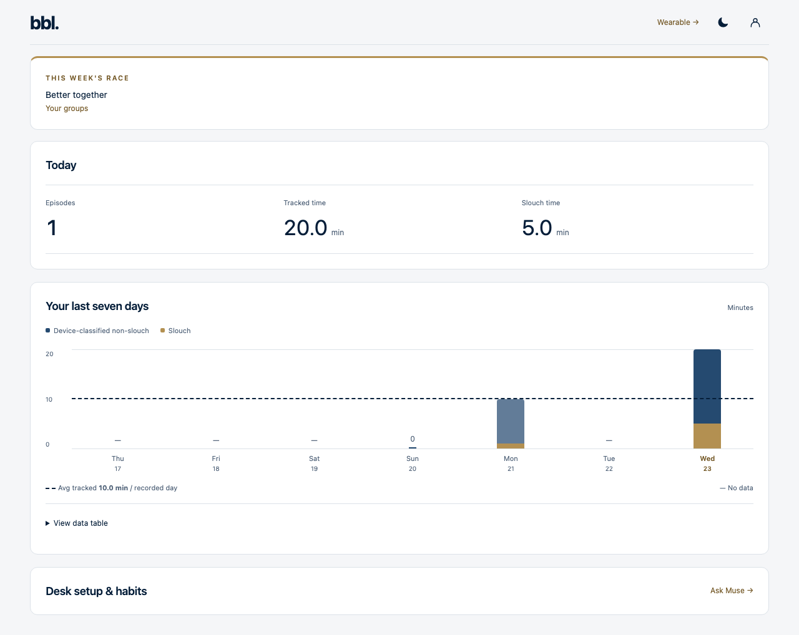

I designed my own instruction set, built a five-stage pipelined processor for it in
SystemVerilog, wrote an assembler, and put it on a small FPGA board where it counts Fibonacci numbers
until it overflows.

FIG. 1 My CPU running on a Tang Nano 9K, connected to two TM1637 displays and an overflow LED.
The design

FIG. 2 The pipeline: fetch, decode, execute, memory, write-back, plus the stall and
forwarding units that keep it correct.
The ISA has 12 instructions: ADD, SUB, AND, OR, XOR, NOT, shift left and right, LOAD, STORE, BEQ and
HALT. A small Python assembler turns readable assembly into the hex the instruction memory loads.
Pipelining means up to five instructions are in flight at once, which creates hazards. I handled
three kinds:
Data hazards. A forwarding unit spots when an instruction needs a result still
sitting in the EX/MEM or MEM/WB register and routes it straight into the ALU inputs.
Load-use hazards. When a value is needed the cycle after it's loaded, forwarding
can't help, so the pipeline stalls for one cycle: PC and IF/ID freeze, ID/EX is zeroed.
Branches. BEQ resolves in EX, so two wrong instructions have already been fetched
when a branch is taken. They're flushed, at a 2-cycle penalty.

FIG. 3 Testbench run in Icarus Verilog, viewed in GTKWave.
On real hardware
The CPU runs on a Gowin Tang Nano 9K on a divided clock (about 1.6 Hz) so you can watch each value
appear. A double-dabble converter turns the 16-bit result into five BCD digits, and a driver I wrote
for the TM1637's two-wire serial protocol (start/stop, byte transfer, ACK, brightness) puts them on two
4-digit seven-segment displays. After 46,368 the next Fibonacci number doesn't fit in 16 bits, and a
red LED lights up to show the overflow.
Simulation passing turned out to be the easy part:
Garbage in memory. I'd initialized memory with an initial block, which
simulators honor and the FPGA silently ignores. Replaced it with a synchronous reset.
Synthesis crash. The data memory used the full 16-bit address for a 256-entry
array, so the tool tried to build a 65,536-way mux. Slicing the address to 8 bits fixed it.
Reset stuck on. The board's button is active-low; my CPU expected active-high.
Next steps
This CPU later became
the benchmark circuit for my GPU logic simulator. Next on its roadmap
are an instruction cache and a proper class-based, constrained-random testbench.
A CUDA gate-level simulator for a 20,170-gate CPU netlist. Replacing per-level kernel launches with one persistent kernel reduced GPU runtime from 53.2 to 11.3 seconds at 100,000 cycles.
The idea
Gate-level simulation evaluates every logic gate in a circuit, every clock cycle. Inside one
"level" of logic, no gate depends on another, so in principle they can all be evaluated at the same
time. I wanted to find out how much that parallelism is actually worth on real hardware, using a real
circuit: the 16-bit pipelined CPU I'd built the semester before.
How it works

FIG. 1 The simulator pipeline, from SystemVerilog to waveform.
SynthesizeYosys flattens the CPU into single-bit gate primitives: 20,170 gates and 8,676 flip-flops.
ParseA C++ parser reads the structural netlist into gate and wire data structures.
LevelizeKahn's algorithm assigns every gate a dependency level, so no gate is evaluated before its inputs are ready.
Flatten for the GPUThe netlist becomes plain integer arrays (gate types, input IDs, output IDs, offsets, signal values) so GPU threads read memory in a predictable pattern.
Simulate and dumpThe CPU or GPU runs the cycles; results go to a VCD file I inspect in GTKWave.
Why the GPU lost, then won
Version 1 launched one CUDA kernel per logic level, per cycle: about 500,000 kernel launches for
10,000 cycles. Each launch only had a few hundred gates of work, so the GPU spent its time being
scheduled instead of computing.
Version 2 launches one persistent kernel for the whole simulation. Threads use
grid-stride loops to cover any number of gates per level, and synchronize between levels on the
device with Cooperative Groups (grid.sync()) instead of returning to the host. That cut
GPU runtime by 4.7× and made it about 2× faster than the CPU at 100,000 cycles.

FIG. 2 Runtime on a Ryzen 5 7600X and RTX 3060 Ti. At 100,000 cycles: CPU 23.3 s,
GPU v1 53.2 s, GPU v2 11.3 s. Below ~500 cycles the one-time setup cost still makes the CPU faster.
The bug that only showed up on the GPU
For a while the GPU gave slightly different answers from run to run. The cause wasn't in my CUDA
code at all. When Yosys flattens submodules, internal wires in different modules can end up with the
same auto-generated name, which silently creates nets with more than one driver. On the CPU the
evaluation order happened to hide it; on the GPU, which thread wrote last changed every run. Adding a
Yosys autoname pass after all the other transformations fixed it, and I verified a
bit-exact match between CPU and GPU on every signal's final state.

FIG. 3 Simulator output in GTKWave.
Limits of the result
Speedup depends on how wide the circuit is, not just how big it is: a narrow, deep circuit can't
keep the GPU busy. And nondeterminism is a symptom, not a bug report; the real problem was upstream,
in the netlist.
I extended the open-source VTR toolchain so a single
configurable logic block can split its logic across two stacked dies, and checked the result all the
way down to a programmed, simulated fabric.

FIG. 1 The prototype CLB. Ten logic elements (FLEs) are split five and five across two
layers. All external pins stay on the bottom "anchor" layer; signals reach the upper layer only
through links inside the block.
The problem
An FPGA is a grid of configurable logic blocks (CLBs) connected by programmable wiring. Every
tool in the open-source flow, VTR included, assumes that each block sits on exactly one layer of
silicon. That assumption breaks as soon as you stack dies. In a 3D FPGA the most interesting
designs put part of a block on one die and part on another, so that short vertical links replace
long horizontal wires.
Before you can measure whether that helps, the CAD tools have to be able to describe such a
block, pack a circuit into it, place it, route it, time it, and generate hardware for it. When I
started, none of those steps knew what a split block was.
The approach
I added two attributes to VTR's architecture description. A tile can declare how many layers it
occupies, and any internal block can list a layer offset for each of its instances:
Offsets are relative to the parent, not absolute. A logic element's layer is the sum of the
offsets on the path up to the CLB, plus the layer where the CLB was placed. That keeps the block's
internal shape the same wherever it is reused, and it meant I never had to store absolute layers in
VTR's shared block graph, which every placed CLB points to.
From there the work was making each stage of the flow respect the new geometry:
Parsing and validation. Reject offsets that don't fit inside the span, in every
operating mode of the block, not just the default one.
Device grid. Reserve the cell above each spanning tile, and reject overlaps or
tiles that stick out the top of the device.
Placement. Only choose legal anchor layers, and never place onto a reserved cell.
Timing. An optional per-crossing delay is added to every internal connection
that changes layers.
Output. After routing, report which layer every LUT and internal connection
landed on, and tag the post-route netlist with those layers.
I also patched OpenFPGA, which turns a VTR architecture into real Verilog for the fabric, so that
every generated logic element carries its layer as an attribute that a physical-design tool can
read later.
Proving it works
"VPR didn't crash" is not evidence. I set up checks that each answer a different question:
Unit testsOffset parsing, bounds, placement legality and utilization counting.
24 full VPR runsIncluding cases that must fail: overlapping tiles, spans that are too short, occupied anchors, pins on the upper layer.
Post-route netlist simulationEvery one of 64 input vectors checked on all 10 outputs against a reference model.
Generated fabricOpenFPGA builds the fabric and a 9,316-bit bitstream; the configured fabric is simulated against the same 64 vectors.
Negative controlI deliberately swap two outputs and confirm both simulations catch it, so a pass actually means something.

FIG. 2 Timing hook. With an illustrative 1 ns cost per layer crossing, the critical
path grows by exactly 2 ns, because it crosses between layers twice. The delay value is a
placeholder, not a measured vertical-link model.
The outcome
Check
Result
Unit tests
All pass
VPR suite
24 / 24
Packing
10 LUTs in one CLB, 5 per layer, two stacked cells
Netlist simulation
64 vectors × 10 outputs ✓
Bitstream
9,316 config bits
Configured fabric
64 vectors × 10 outputs ✓
Planted output swap
Caught by both simulations
Past the CAD changes, I took the generated CLB on its own and kept pushing: programming it through
its 1,700-bit configuration chain, assigning every internal component to layer 0 or 1, synthesizing
it to the Nangate45 cell library, and running a single-die OpenROAD place-and-route as a baseline.
A 44-case functional simulation suite checks the RTL, the synthesized netlist and the post-route
netlist against each other. That surfaced real findings, like flip-flop models that react to reset edges while the library cell is
level-sensitive, and a clock input with no loads.
Fixing the framework underneath
My work builds on LaZagna, an open-source 3D FPGA framework that won Best Paper at ICCAD 2025.
Along the way I found that its RTL generation failed for 3 of its 6 architecture types, and traced
it to an interlayer port declared 88 bits wide on one side and 86 on the other. I also fixed a build
failure that hit anyone starting from a clean clone.
What I learned
The hard part of a research tool isn't the feature. It's knowing when you can trust the answer.
Most of my time went into negative tests and controls, not the feature itself. I also learned to
read and change a large C++ codebase I didn't write, to be honest about limits in writing (the
crossing delay is illustrative, upper-layer pins aren't supported yet), and to explain a design
clearly enough that someone else can pick it up.
Next steps
Pins on the upper layer and vertical routing between tiles.
Real vertical-link parameters (pitch, resistance, capacitance, drivers) instead of a placeholder delay.
A physical-design flow that actually reads the layer attributes.
A four-person hackathon build: a small ESP32 wearable that detects slouching on-device
and syncs to a web dashboard. I owned the
hardware and firmware.
The problem
Long study sessions make it easy to stop noticing how you sit. We wanted something that would give
students measurable feedback about their posture and small, encouraging goals, without being a medical
device.
My part: the device
The wearable is an ESP32 with a BNO055 orientation sensor (IMU), read over I²C. All posture
classification happens on the device; only the results go over Bluetooth Low Energy to the browser, so
the web app never has to interpret raw sensor data.
Calibration. Press a button while sitting upright, and that becomes your personal
baseline. Everything after is measured relative to it.
Angle wraparound. Orientation angles jump from +180° to −180°. Without handling
that, turning slightly could look like a huge lean.
Persistence window. Reaching for a coffee isn't slouching. A lean only counts
after 10 continuous seconds, and you have to be upright for 3 seconds before it resets.
Timing that doesn't break. Elapsed times use unsigned subtraction, so they stay
correct even when the ESP32's millisecond counter wraps around.

FIG. 1 The team's dashboard, fed by the wearable: today's slouch episodes and time,
plus a seven-day history. Sample data shown.
The rest of the system
My teammates built the Ruby on Rails app: accounts, friend groups with weekly rankings, and a
dashboard. Readings are stored in a TimescaleDB hypertable on Tiger Cloud. My job was to make the boundary between them clean: the device publishes cumulative
posture snapshots over BLE, and the browser forwards them to the server.
What I learned
Working on a team under a hackathon deadline means agreeing on interfaces first. Once the BLE message format
was settled, the hardware and the web app could be built in parallel and meet in the middle.